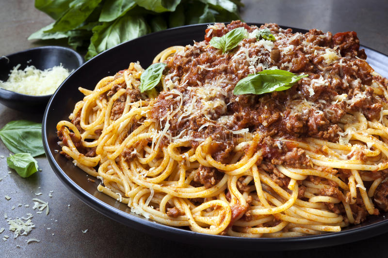

Spaghetti

Spaghetti is an italian dish that is made primarily of noodles and tomato sauce.
There are many ways to make spaghetti, but in this formula we are going to show the simplest and most common way to do it.
Ingredients
- 1 medium yellow onion
- 3 cloves garlic
- 1 tablespoon olive
- 1 pound lean ground beef
- 1 1/2 teaspoons kosher salt, divided, plus more for the pasta water
- 1/2 teaspoon dried oregano
- 1/4 teaspoon freshly ground black pepper
- 1/4 teaspoon red pepper flakes (optional)
- 1 (28-ounce) can crushed tomatoes
- 1 pound dried spaghetti
- 2 teaspoons balsamic vinegar
Steps
- Get Your Supplies - Buy all the supplies listed above.
- Cooking the Meat + Get the Water Boiling - start a boil for your water and start cooking up the meat
- Mixing in the Sauce - Mix the sauce in with your meat once its cooked
- Cooking the Spaghetti - add the spaghetti into the boiling water and start a timer for 12 minutes
- Serving Your Spaghetti - Use tongs to move the spaghetti to your dish and mix in the sace with meat.